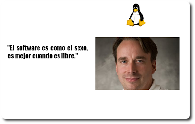
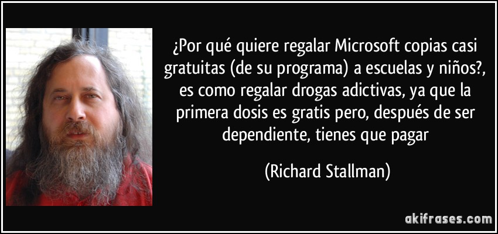
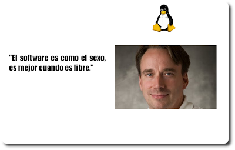
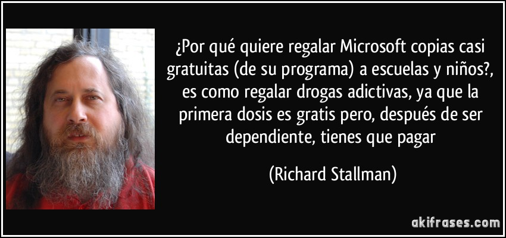

Laboratoria existe para encontrar jovenes mujeres con potencial pero sin acceso a educacion superior de calidad y transformarlas en talentosas desarrolladoras webm que sirven clientes locales e internacionales con soluciones digitales de excelente calidad.
 


